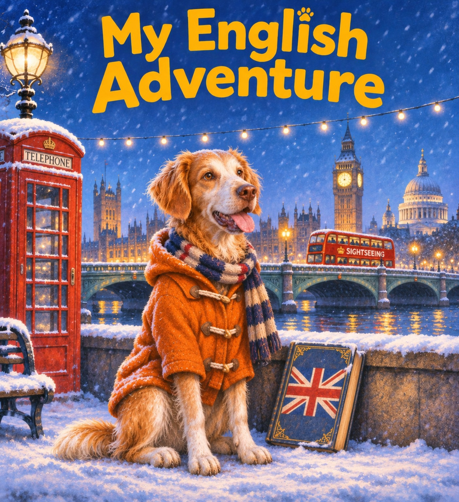

Choose your adventure · Scegli il tuo laboratorioMy English Adventure
Due laboratori autonomi: ciascuno ha la propria Word Bank, l’allenamento e le attività di produzione. Scegli quello su cui stai lavorando in classe.
This is me!
Racconto le mie abitudini in prima persona, usando il Present Simple e gli avverbi di frequenza.
Word Bank · Let's practise! · Let's create!
Guess Who?
Descrivo un compagno oppure invento un mostro: il Present Simple alla terza persona.
Word Bank · Let's practise! · Let's create!Per tornare al portale generale usa il collegamento in alto. All'interno di ogni app puoi ritornare a questa home.